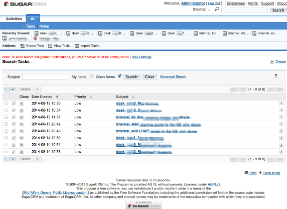
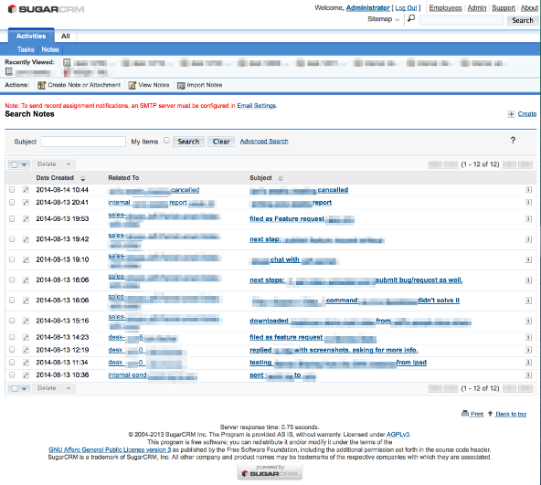

up one level
---
2014-08-14 21:46:25
Using SugarCRM CE as a Daily Task Tracker and a Work Activity Log
I’ve been looking for a software to track my daily Software
Support Engineer tasks and to log my daily activity related to these
tasks.
I had been using Trello.com for daily task tracker (to-do list),
and gitrdone php script
to log my daily activity.
I’m now trying SugarCRM CE (community edition) to track tasks and
Notes.
To hide unused menu items and de-clutter the top menu, I went into
"Admin" > "Display Modules and Subpanels" and
dragged-and-dropped all but the "Tasks" and "Notes"
modules from "Displayed Modules" to "Hidden Modules".
For tasks, to streamline the list view that I see when viewing the
grid/list of all open tasks, I hid all but the "Close",
"Date Created", "Priority" and "Subject"
columns by going into "Admin" > "Studio" >
"Tasks" > "Layouts" > "ListView"
and dragging-and-dropping only these four choices into the "Default"
column (leaving in the "Available" or "Hidden"
columns the choices corresponding to the other task grid/list
columns) Screenshot here of my tasks list interface:

For notes, to streamline the list view I did pretty much the same
thing and hid all but the "Date Created", "Related To"
and "Subject" columns. Screenshot here of my notes list
interface:

So my work flow on this setup is like this:
When I get a new task, such as from a Software Customer Support
ticket system, from my software support engineer colleague or from my
sales colleague or from somewhere, I enter it as a new task, which
shows up in my list of tasks. I can sort my list of tasks by Date
Created or by Priority or by Subject. When I solve the task I can
mark it as Closed. This constitutes my to-do list, so all my tasks
are in one place, and so I don’t forget any of them (even when my
brain got full).
Throughout the day when I finish a task or even part of a task,
under that task I can click the "Create Note or Attachment"
button to create a new note related to that task. This creates a
log/record of what I’ve done throughout each day. At the end of the
week I can report on this– I use this to either make a report of
what I’ve done to give to my boss, or to review and re-write into a
blog post to share with everybody what I accomplished that week!
That’s how I’ve started using SugarCRM as a daily task tracker and
a work activity log.
*2014-12-05 edit: previously published at
http://w̶i̶e̶l̶d̶l̶i̶n̶u̶x̶.̶c̶o̶m̶/?p=167
[2020 edit: Moved to: https://i̶n̶v̶e̶s̶t̶o̶r̶w̶o̶r̶k̶e̶r̶.̶c̶o̶m̶/2014/... .html.]